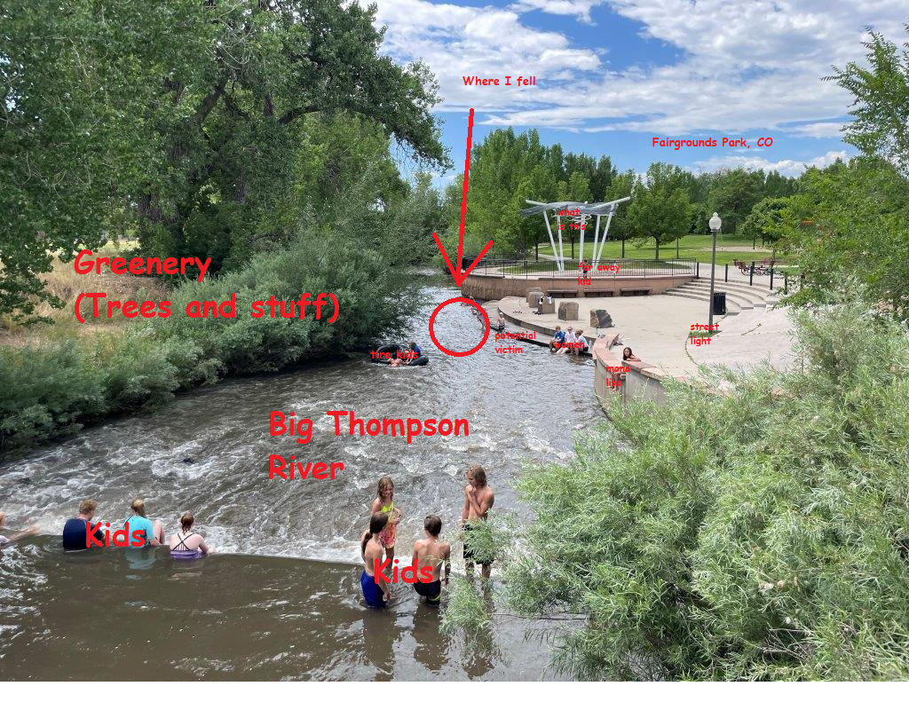

Stories & Vague Memories
These are real things that happened to me. Some elements may be dramatized for comedic effect.
Stories are sorted from newest to oldest. I don't remember exactly when these stories happened so I'm just guessing.

School Stories
During online school, I was a huge slacker. Like everybody else, I played video games while having the Zoom call run in the background. But the thing is, I never did any of the work. I literally had a 0% in every class on my report card. My mom wasn't too happy about this. In response, she resorted to having me sit in her room and watch me complete Every. Single. Assignment. There were probably hundreds, and there was no way I was gonna do all that. So, I just submitted them all with no work done to make it seem like I did it. The next day, when I logged into first period, my teacher was furious because first, she had to go back and unsubmit all of those assignments, and second, because I got her hopes up that I finally did some work. I think she even tried to get me to unmute my mic and apologize, but I never did. Then came third period. My history teacher screenshared one of my submitted assignments to the entire class. The only this I wrote on the document was "cringe nae nae baby". And finally, in my P.E. class, the teacher called me out on it. This story is really sad because it marks the end of my consistently good grades. Just the previous school year, I had all A's and made the gold honor roll, but after this, I never saw an A again (not counting classes like P.E. where you literally get an A just for showing up). If any of my teachers read this, I'm sorry.
My friend Xavier asked me if I liked elephants or donkeys more. I chose elephants because I thought they were way better than donkeys in every way. They have superior intelligence, higher strength, and they are much cuter. But I digress. After giving my answer, he accused me of being a Trump supporter because the republican party is represented with an elephant. Foolishly, I doubled down on this because I didn't like Hillary Clinton as a kid because I saw a video of her spitting green gooey phlegm into a cup of water one time and it was gross and I thought she was an alien. Most of the students at that school were Mexican so they got pretty mad. Whoops!
During class, we had free time to do whatever we wanted. I spent most of the time inventing a new language where I just offsetted the alphabet by one letter (A became Z, B became A, and so on). I had the bright idea to go up to people and translate their names into said language. The first person I went up to was Danielle. When I showed her it, she said, "Wooowwwww. And this is your name in my language", took my whiteboard, and wrote "ugly" in all capital letters. For the record I am not ugly, I am very pretty. I have no idea why she did this. The only other interaction I've had with her was asking her why she wasn't here on the first day of school.
Our school hosted a book fair, just like every other year. Usually, I wouldn’t care enough to buy anything, but this time was different because I had found a Plants vs. Zombies comic book that I really really wanted. The next day, I asked my mom for five dollars to buy it and during lunch, I walked to the library, grabbed the comic, and went to check out. To my utter horror, the librarian said I didn’t have enough money because I needed to pay an extra quarter for tax. I asked, “Why?” She replied, “That’s just the way things are.” I spent the rest of the school day feeling foolish and dejected because it was the last day of the book fair and there was no way I was going to find a quarter in time. That was until a girl named Emily saved the day. Emily was a very cool gal because she would always laugh at my jokes and was very chill. One time, I accidentally drank her milk during lunch and she didn't even get mad. Anyway, I told her my situation, and she said, “Well, today’s your lucky day!” and materialized a quarter in the palm of her hand. When school ended, I bought that comic, and my life was saved. Thank you, Emily. If you are reading this, I am ready to pay you back. Moral of the story: ABOLISH TAXES! THEY SUCK!!!!
Every year our school would have an event where they force us to dance to a song. The song the teacher chose was "Mi Burrito Sabanero". I was extremely upset that the song wasn't something cool like Skrillex or a Minecraft parody or something. I spent the entire day refusing to practice the dance, fantasizing about how cool dancing to Skrillex or a Minecraft parody would be instead. The next day I decided that I actually should practice it because I remembered that we would have to perform it for the entire school and I didn't want to look stupid.
Our teacher sent us to have naptime so she could talk with the principal in the corner of the room. I thought it would be funny if I woke up and started making rooster noises to try and wake people up. I went up to this kid named Pablo who was sleeping in the fetal position, got mere inches away from his ear, and started screaming. It was then when I accidentally drooled into his ear, basically giving him a wet willy. The teacher sentenced me to death by lethal injection.
During physical education time in Kindergarten, we had to run laps around the track. Before we started, the teacher explained the rules and warned us, "Try not to trip or fall on the track or else you could get hurt." The moment she said that, an idea sparked in my brain. I devised a genius plan to prank the teacher by pretending to trip and fall. So, halfway through my lap, I did just that. I laid there for a while waiting for a reaction from the teacher when suddenly, this kid tramples me. Strangely enough, I don't remember much pain, but I still cried and was sent to the nurse. Things were pretty much fine after they gave the frozen Kool-Aid ice pack. As for why the kid didn't stop or just run around me, I have no idea.
This kid named Eddie did something to me which made me tell on him to the recess monitor. I pointed at him referring to him with she/her pronouns. The recess monitor corrected me and told me that Eddie is a boy so I should use "he" instead of "she". That was the day I realized that wokeness must be eradicated.
This girl named Kaitlyn and I were about to read a Where's Waldo book together. When I tried reading the name of the book, I hiccuped when I said the "O" in "Waldo", which made her laugh. I spent the rest of the time trying to recreate that moment in an attempt to make her laugh some more.
In pre-k, this kid named Daniel who I distinctly remember wearing a Julius The Monkey shirt mounted me like a horse on top of another horse while I was on all fours. That's it.
Our teacher pointed to a mirror and asked the class what the object was. I raised my hand and said, "Mirror", but in a way that made me sound like I had a Bostonian accent. Then, this kid named Gabriel said, "Thats not how you say it" and then I got sad. Because I knew. I knew it was the wrong way to pronounce it but I couldn't pronounce it correctly.
Life Stories
After we learned about how plants grow, our school gave each student a flower seed to take care of in a Ziploc bag. I was really psyched to grow a flower, so I found a nice flower pot and planted the seed. Everyday for like a week, I gave it water, lots of sunlight, hugs and kisses... but the plant seemed to not be growing. I figured that it just needed more water, so I poured an overzealous amount into the flower pot. Big mistake, because it completely flooded the pot and was dripping down the sides. Our teacher had warned us that too much water would kill the plant too, so I panicked. I quickly tilted the pot to pour some water out, which accidentally spilled the entire thing down the side of my sister's bunk bed. I stared as the dirt went down the side of the bed, contemplating everything. I was so upset, I didn't even attempt to salvage it. I just cleaned up the wall and left everything else to rot on the carpet floor, which was probably left there until we moved out of that house. Back at school, I was really jealous of my classmate Emily (the same one from the book fair story) because her flower grew spectacularly. She won the "Green Thumb" award, skipped a grade, got a full scholarship to Harvard, and is now a world-renowned horticulturalist who tours the world. Sigh... That could've been me if I didn't F*KING SPILL THE FLOWER POT. And maybe had a little more patience, because, like, not all seeds immediately sprout after a week.
Summer of 2015. I was at Fairgrounds Park in Loveland, CO to have a nice splash at the waterpark. Before this incident happened, we were pretty much done with the waterpark so we changed into dry clothes, but we still wanted to check out this part of the park that had a little stoop thingy that led directly into the Big Thompson River. Now, I was told to only stick my feet in the river just to feel the flow or whatever, but my child brain craved something more adventurous. So, I started walking around the final step. That final platform gave me a false sense of security, making me think that the water wasn't as deep as it was. Next thing I know, I walk directly off that platform and plunge all the way to the bottom of the river. Oddly enough, I wasn't really panicking and I had my eyes completely open underwater without any eye pain. Thankfully, my buoyant body helped me rise up right before the river swept me away completely, which allowed me to be saved by a girl who reached her hand out. After all that, I remember being more mad that my clothes got wet than anything else. Later that day, I was playing Roblox (specifically the game TNT Rush) on my laptop and my cousin's boyfriend(?) said something like, "So I heard what happened..." which I assume was referring to this incident. That's pretty much all I remember. Oh, and that girl who saved me? We've been happily married for ten years and have had two lovely children, Bartholomew & Jebediah. Love can be found anywhere.
While I was in Colorado, we went to a playground. I really don't remember much of it besides the fact I ding dong ditched some poor woman's door and that I stopped a girl from swinging on the swingset because she said something to me I didn't like.
I was swimming in the pool at our local waterpark. Despite having never swum before in my life, I managed to do it flawlessly. That was until it was closing time and the lifeguards instructed us to leave the pool. Due to the commotion of people quickly trying to leave the pool, I panicked and started drowning. The crazy part? The lifeguards did absolutely nothing, they just stood there, yelling at me to leave the pool. In the end, some teenager picked me up and carried me to safety. I oughta sue those lifeguards...
Internet Stories
While playing Beach House Roleplay, this guy started going up to me and virtually humping me. The video below pretty much explains it all. I censored the word "gay" because I thought it was a horrible offensive slur because our teacher told us to stop calling the water fountain next to the restroom the "gay fountain" or else we would get detention. PS: This was in 2014. I no longer hold the opinions of me in 2014.
Roblox had a huge problem with "cyberbullying" around the time I started playing. Builder's Club (BC) players would harrass any Non-Builder's Club (NBC) player in the server. This happened to me while I was playing some tycoon game where this guy with BC kept spawnkilling me and would not let me progress any further simply because I was NBC. It was so bad that I think I actually started crying. After that, I decided that enough was enough and that today was the day I would finally get BC. When my mom came back home, I asked her to buy it, which, surprisingly, was really easy and didn't take much persuading. Although she bought the lowest value membership, it didn't matter. With BC, I practically owned every server I was in. I continued the vicious cycle of bullying on Kohl's Admin House, where I tormented a noob so brutally that he completely quit Roblox. I am not proud of this, and since then, I've sought forgiveness for my sins.
After recieving my very own laptop for my birthday, I was free to explore the internet as I please. I stumbled across Roblox through an ad while playing flash games or something. It looked interesting so I downloaded Roblox and played as a guest throughout early 2013. The very first game I played was a generic build to survive game that was Minecraft creeper themed. After a few months as playing as a guest, I got tired of people being mean to me because for some reason guests were really hated on back then so I asked my mom to create an account for me because I had no idea how. The first game I played with this account was Lava Escape, which was a clone of Flood Escape but with lava instead of water.
Dreams
4/14/25
I took a visit to the Pee Museum. Despite the name, it had nothing to do with pee. It was just museum with a bunch of statues, and for some reason, touching the statues would inflict random effects on whoever touched them (your skin would turn chrome, your bodily fluids would turn red, and other effects I don't remember).
12/31/22
I had a very short dream where I was in a tour bus for TMBG, heading to a venue they were going to perform at. Near the start of the trip, some kid walked up to the bus with a toy gun, which scared me. Everyone else laughed at me because they didn't think it was a real gun in the first place. After a while, we got to this part of the road that was really narrow and was over an extremely deep canyon. Predictably, the bus ended up falling and we all died. But before the bus hit the bottom of the canyon, it started floating upwards for a bit. And then I woke up.